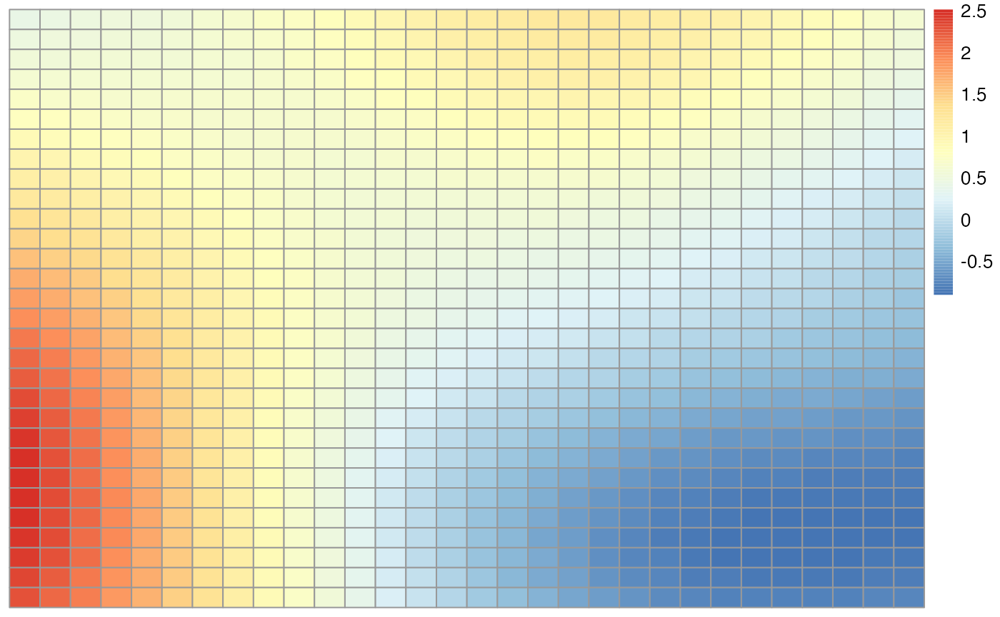

introduction.Rmd
library(GPcov)This is a quick introduction of how to use the GPCov package.
compute_cov_matrix() function
In GPcov, the main function we will use is named compute_cov_matrix(), and it has two arguments, namely points and cov_func.
points has to be a data.frame with n rows and d columns, such that it corresponds to n d-dimensional points. For instance, we can define it a set of \(30 \times 30 = 900\) points in \(\mathbb{R}^2\).
x <- seq(from = 1, to = 30, by = 1)
y <- seq(from = 1, to = 30, by = 1)
z <- expand.grid(x, y)
print(class(z))
#> [1] "data.frame"
print(nrow(z))
#> [1] 900On the other hand, cov_func has a few options currently implemented, namely white_noise, brownian_motion, exponential, and matern_model. Each of these models correspond to a specific covariance function, which we will detail now.
Let \(X(\mathbf{u})\) be a random process, such that \(\mathbf{u} \in \mathbb{R}^d\), for some positive integer \(d\). Also, whenever it is used, let \(h = ||\mathbf{u}_1 - \mathbf{u}_2||\) denote the Euclidean distance between \(\mathbf{u}_1\) and \(\mathbf{u}_2\), where \(\mathbf{u}_1, \mathbf{u}_2 \in \mathbb{R}^d\). Finally, let \(\text{Cov}(X(\mathbf{u}_1), X(\mathbf{u}_2))\) denote the covariance between \(X(\mathbf{u}_1)\) and \(\mathbf{u}_2\). That being defined, the available models are specified in the following way
white_noise: \[
\text{Cov}(X(\mathbf{u}_1), X(\mathbf{u}_2)) = \left\{
\begin{array}{ll}
0 & \text{ if } \mathbf{u}_1 \neq \mathbf{u}_2 \\
1 & \text{ if } \mathbf{u}_1 = \mathbf{u}_2
\end{array}
\right.
\]
brownian_motion: It is only defined for \(u \in \mathbb{R}\); in that case, \[
\text{Cov}(X(u_1), X(u_2)) = \min(u_1, u_2)
\]
exponential: for \(\sigma^2, \beta > 0\), \[
\text{Cov}(X(u_1), X(u_2)) = \text{Cov}(h) = \sigma^2 \cdot \exp\{-h/\beta\}
\]
matern_model: for \(\sigma^2, \nu, \beta > 0\), \[
\text{Cov}(X(u_1), X(u_2)) = \text{Cov}(h) = \frac{\sigma^2}{2^{\nu - 1} \cdot \Gamma(\nu)} \cdot \left(\frac{h}{\beta}\right)^{\nu} \cdot K_{\nu}\left(\frac{h}{\beta}\right),
\] such that \(\Gamma(\cdot)\) is the gamma function, and \(K_{\nu}(\cdot)\) is the modified Bessel function of the second order.
For instance, we can compute a covariance matrix for the Matérn model with \(\sigma^2\), \(\nu = 5\), and \(\beta = 5\) in the following way
C <- compute_cov_matrix(points = z, cov_func = "matern_model", sig2 = 1, nu = 5, beta = 5)
print(C[1:5, 1:5])
#> [,1] [,2] [,3] [,4] [,5]
#> [1,] 1.0000000 0.9975042 0.9900662 0.9778325 0.9610392
#> [2,] 0.9975042 1.0000000 0.9975042 0.9900662 0.9778325
#> [3,] 0.9900662 0.9975042 1.0000000 0.9975042 0.9900662
#> [4,] 0.9778325 0.9900662 0.9975042 1.0000000 0.9975042
#> [5,] 0.9610392 0.9778325 0.9900662 0.9975042 1.0000000And we can simulate a (zero-mean) Gaussian process with covariance matrix C using the mvrnorm() function (from the MASS package) as follows
library(MASS)
GP <- mvrnorm(n = 1, mu = rep(0, nrow(C)), Sigma = as.matrix(C))
GP <- matrix(data = GP, nrow = length(y), ncol = length(x), byrow = TRUE)
library(pheatmap)
pheatmap::pheatmap(GP, cluster_rows = FALSE, cluster_cols = FALSE)